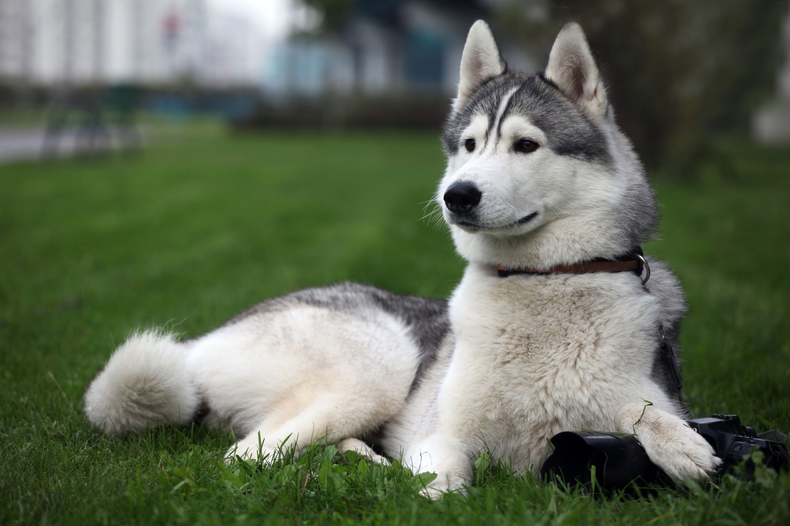
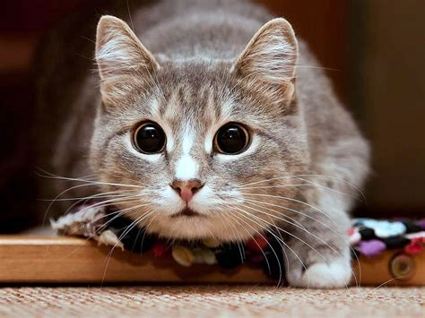

О нас
Мы — команда энтузиастов, которые верят в силу сообщества и помощи друг другу. Наш проект "Новая жизнь" создан для того, чтобы помочь вам найти потерянных питомцев и вернуть их домой. Мы понимаем, насколько важно для каждого владельца животного, чтобы его любимец был рядом. Поэтому мы создали этот сайт, где каждый может разместить информацию о найденном животном или найти пропавшего друга. Присоединяйтесь к нам и помогите вернуть радость в дом многих семей!
Найденные животные


Активный поиск

Пропал пёс
Район: Ленинский
Контакты: +7 999 123 45 67
Дата: 10.10.2023
Статус: Активно

Пропал кот
Район: Октябрьский
Контакты: +7 999 987 65 43
Дата: 15.10.2023
Статус: Активно